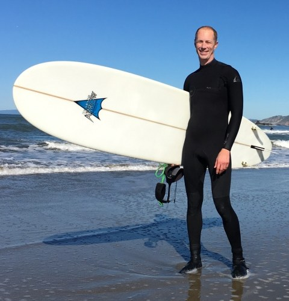

Sean Rhea passed away peacefully at his home in San Francisco from brain cancer on September 13, 2025 — he had just turned 49 on August 23.
Sean grew up in Houston, Texas, with his parents and brother. He moved out west to earn his Ph.D. in computer science at UC Berkeley, where he also started his bike racing career. After graduating in 2005, he moved out east for a post doc at MIT where he continued to race bikes and met friends who would eventually start Meraki, which he joined in 2007. After growing a family and building his career in San Francisco, he started an extended sabbatical from Meraki, now part of Cisco, in November 2023, five months before his diagnosis. During his sabbatical, he was able to continue building the backyard fort with his son, go surfing with no time constraints other than the waves, and spend relaxed time with his two-year-old daughter. Even when Sean lost the use of his right hand, he bought a melodica — a testament to how Sean always pushed himself physically and intellectually.
Sean is survived by his parents, brother and family, wife, son, and daughter.
Sean always wanted to support those around him. During his graduate years at Berkeley, he taught algebra at Mount Tamalpais College (formerly the Prison University Project), which helps San Quentin inmates pursue an education. It is truly an incredible program led by an amazing team. If donating in his memory is something you would like to do, please consider donating to Mount Tamalpais College.
Sean had a dear dog, Rudy, who many remember fondly. As a way to train Rudy to be under voice control, Sean made a whistle just for him. As time went on, Rudy passed away and the whistle lived on in his marriage and with his kids. It became a family call.
Here is his whistle.
We love you and miss you, Sean. You will forever be in our hearts. We will always remember your laugh and very loud sneeze.